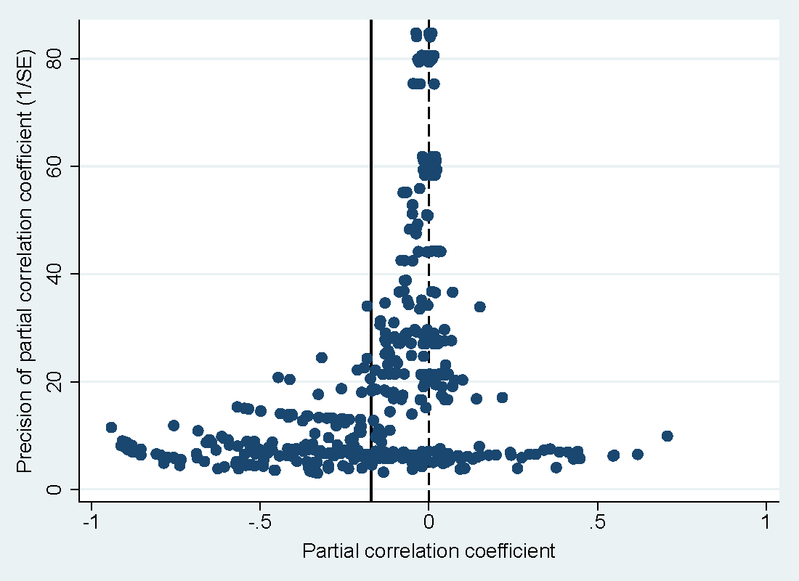

Abstract
One of the most frequently examined relationships in education economics is the impact of tuition increases on the demand for higher education. We provide a quantitative synthesis of 443 estimates of this effect reported in 43 studies. While large negative estimates dominate the literature, we show that researchers report positive and insignificant estimates less often than they should. After correcting for this publication bias, we find that the literature is consistent with the mean tuition-enrollment elasticity being close to zero. Nevertheless, we identify substantial heterogeneity among the reported effects: for example, male students and students at private schools react strongly to changes in tuition. The results are robust to controlling for model uncertainty using both Bayesian and frequentist methods of model averaging.
Fig: Publication Selection Creates a Downward Bias in the Literature
Reference: Tomas Havranek, Zuzana Irsova, and Olesia Zeynalova (2018): "Tuition Fees and University Enrolment: A Meta‐Regression Analysis". Oxford Bulletin of Economics and Statistics 80(6): 1145-1184.